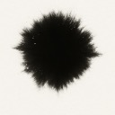

Leaf width/height policy lives in elk-node-dimensions.js; RF fallbacks match processLayoutedGraph(..., dimensions) from openai-realtime-elkjs-tool.
elk-node-dimensions.js
processLayoutedGraph(..., dimensions)
Target width on screen; invisible hit stroke scales as 1 / zoom so it feels the same while you zoom the canvas.
1 / zoom
Constant on-screen size; RF viewport zoom scales node chrome, label compensates with fontSize / zoom.
fontSize / zoom
At or below → label inside group (top-left); above → above frame, flush left. Matches RF min/max zoom (~0.08–2).
Console: viewTune.elkLeafNodeWidth = 240 then refreshElkDerivedDiagramViews() or syncViewTuneUI(). RF labels: viewTune.groupLabelFontPx, viewTune.groupLabelOutsideZoomAt.
viewTune.elkLeafNodeWidth = 240
refreshElkDerivedDiagramViews()
syncViewTuneUI()
viewTune.groupLabelFontPx
viewTune.groupLabelOutsideZoomAt